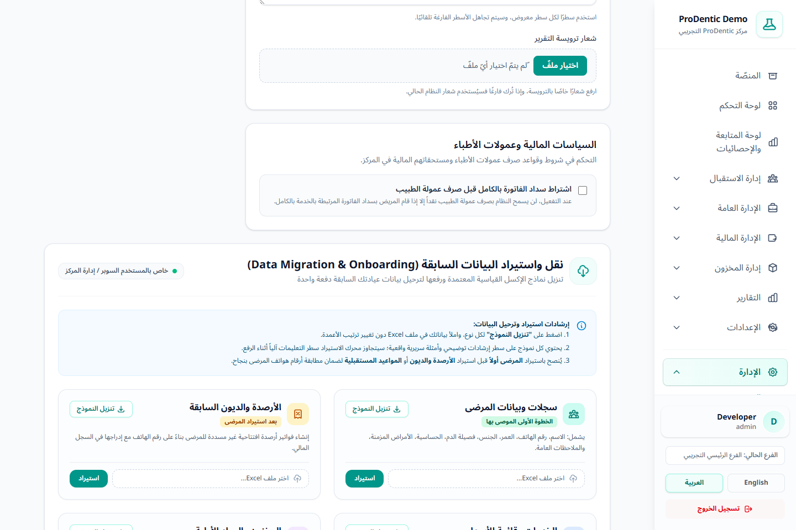

1قبل البدء
- تأكد من اختيار المركز والفرع الصحيحين؛ بعض البيانات مثل المخزون والمواعيد ترتبط بالفرع الحالي.
- أنشئ نسخة احتياطية قبل الاستيراد الكبير.
- يلزم حساب مخول بإعدادات النظام وصلاحية
settings.edit. - الملفات المدعومة:
xlsxوxlsوcsv، وبحد أقصى 10 ميجابايت لكل ملف.
لا تستورد ملفًا حقيقيًا أول مرة بالكامل. اختبر 3–5 صفوف، راجع النتيجة داخل النظام، ثم نفذ الملف الكامل.
2ترتيب الاستيراد الموصى به
- المرضى: لأن الهاتف هو مفتاح الربط لبقية الملفات.
- الخدمات والأسعار: تجهيز كتالوج الفوترة.
- المخزون: الأصناف والوحدات والفئات والكميات الافتتاحية.
- الأرصدة والديون السابقة: بعد التأكد من وجود جميع المرضى.
- المواعيد القادمة: بعد تعريف الأطباء والغرف ومطابقة المرضى.

3القوالب وكيف يمنع النظام التكرار
| القالب | أهم الحقول | قاعدة المطابقة/التحديث |
|---|---|---|
| المرضى | الاسم، الهاتف، العمر، الجنس، فصيلة الدم، الحساسية، الأمراض، الملاحظات. | رقم الهاتف داخل المركز؛ السجل الموجود يُحدّث بدل إنشاء مريض مكرر. |
| الأرصدة الافتتاحية | هاتف المريض، الاسم، المبلغ، التاريخ، الوصف. | الهاتف يحدد المريض، وفاتورة «رصيد افتتاحي / دين سابق» الموجودة تُحدّث. |
| الخدمات والأسعار | اسم الخدمة، السعر، نطاق الفوترة، الحالة. | اسم الخدمة داخل المركز. |
| المخزون | الصنف، الباركود، الوحدة، الفئة، الكمية، الحد الأدنى، الوصف. | اسم الصنف أو الباركود داخل الفرع؛ ينشئ الوحدة والفئة غير الموجودتين. |
| المواعيد | هاتف المريض، الاسم، التاريخ، الوقت، الطبيب، الغرفة، الملاحظات. | المريض + التاريخ والوقت؛ يُحدّث الطبيب/الغرفة/الملاحظة عند التطابق. |
حمّل القالب من زر تنزيل النموذج ولا تغيّر ترتيب الأعمدة. اترك صف التعليمات كما هو؛ يتجاوزه النظام تلقائيًا.
4طريقة تجهيز ورفع الملف
- افتح الإدارة ← إعدادات النظام وانتقل إلى قسم نقل واستيراد البيانات السابقة.
- نزّل نموذج النوع المطلوب وافتحه في Excel.
- الصق البيانات تحت العناوين دون دمج خلايا أو إضافة أعمدة في البداية.
- استخدم أرقام هواتف متسقة؛ يحول النظام الأرقام العربية وينظف المسافات والرموز الشائعة.
- احفظ الملف ثم اختره من البطاقة المناسبة واضغط استيراد.
- انتظر رسالة الملخص ولا تغلق الصفحة أثناء الرفع.
5قراءة نتيجة الاستيراد ومعالجة الأخطاء
- تعرض الرسالة عدد السجلات الجديدة وعدد السجلات التي تم تحديثها.
- إذا وُجدت صفوف غير صالحة، يظهر رقم السطر وسبب الخطأ بينما تستمر معالجة الصفوف الصحيحة.
- في الأرصدة والمواعيد، رسالة «المريض غير مسجل» تعني أن رقم الهاتف لم يطابق سجلًا؛ صحح الرقم أو استورد المرضى أولًا.
- في المواعيد، راجع صيغة التاريخ والوقت. عند غياب الوقت يستخدم النظام وقتًا افتراضيًا، لكن الأفضل تعبئته صراحة.
- في الأسماء الطبية، يطابق النظام اسم الطبيب والغرفة تقريبًا؛ راجع النتيجة عند اختلاف التهجئة.
6التحقق النهائي بعد الترحيل
- افتح قائمة المرضى وابحث بعينة من الأسماء والهواتف.
- راجع السجل المالي لمرضى لديهم ديون سابقة وتأكد من عدم مضاعفة الفاتورة.
- قارن عدد الخدمات والأسعار بعينة من النظام القديم.
- راجع كميات المخزون وحدود إعادة الطلب في الفرع الصحيح.
- افتح التقويم وتحقق من مواعيد عدة أطباء وغرف.
- نزّل تقريرًا ماليًا تجريبيًا واحتفظ بمحضر نتيجة الاستيراد.
إعادة رفع الملف نفسه قد تحدّث السجلات المطابقة. مع ذلك، احتفظ بنسخة من الملف المستخدم وسجل وقت العملية لتسهيل المراجعة.